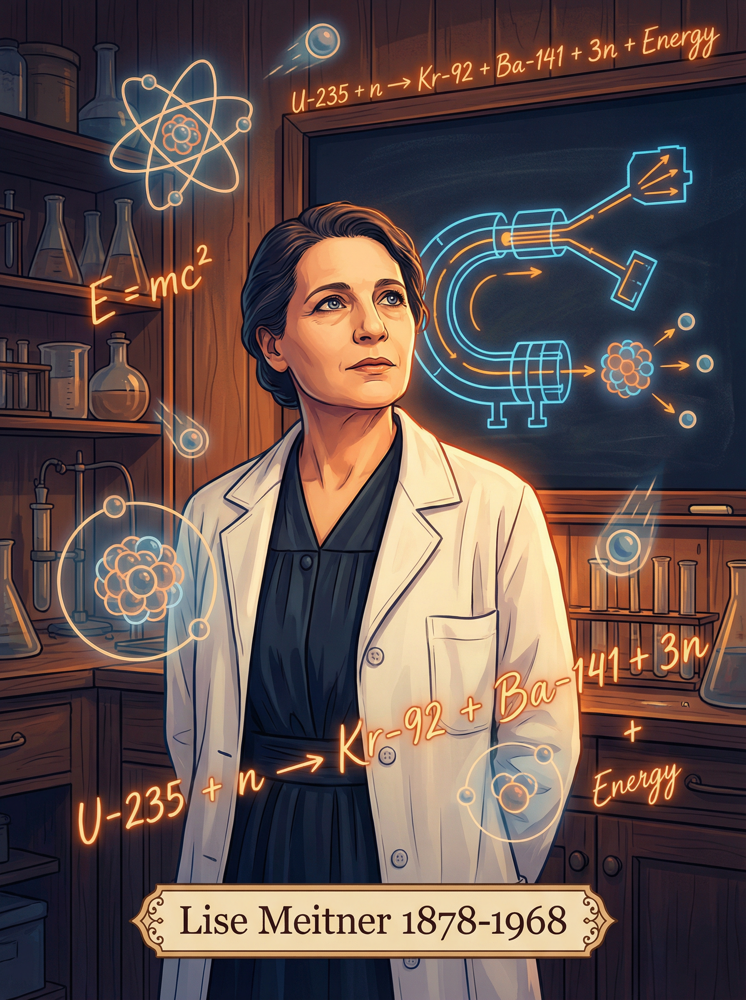

⚕️ Mujeres en Medicina
Pioneras que revolucionaron la medicina y salvaron millones de vidas
Introducción
La medicina moderna debe mucho a las contribuciones de mujeres extraordinarias que desafiaron las convenciones de sus épocas. Marie Curie descubrió la radiactividad, Lise Meitner explicó la fisión nuclear, y Rosalind Franklin reveló la estructura del ADN. Sus descubrimientos han transformado la medicina y la ciencia para siempre.
Marie Curie (1867–1934)

Descubridora de la Radiactividad
- Nació en Varsovia, Polonia en 1867
- Primera mujer en ganar un Premio Nobel
- Única persona en ganar dos Premios Nobel en diferentes campos
- Descubrió el polonio y el radio
- Desarrolló técnicas de radiografía
- Murió por exposición a la radiación que ella misma estudió
Legado Revolucionario
Marie Curie no solo descubrió nuevos elementos, sino que revolucionó nuestra comprensión de la materia y la energía. Sus investigaciones sobre radiactividad sentaron las bases para la medicina nuclear moderna y el tratamiento del cáncer.
🎧 Escucha: La vida de Marie Curie
Lise Meitner (1878–1968)
Explicadora de la Fisión Nuclear
- Nació en Viena, Austria en 1878
- Explicó teóricamente la fisión nuclear
- Fue perseguida por el régimen nazi
- Emigró a Suecia y luego a Inglaterra
- Su trabajo fue fundamental para la física nuclear
- Vivió 90 años dedicada a la ciencia
Descubrimiento Crucial
Lise Meitner proporcionó la explicación teórica de la fisión nuclear, uno de los descubrimientos más importantes del siglo XX. Aunque no recibió el Premio Nobel por este trabajo, su contribución fue fundamental para comprender la energía nuclear.

Video: La Fisión Nuclear Explicada
Rosalind Franklin (1920–1958)

Reveladora de la Estructura del ADN
- Nació en Londres, Inglaterra en 1920
- Realizó la famosa "Fotografía 51"
- Sus imágenes de rayos X revelaron la estructura del ADN
- Trabajó en cristalografía de rayos X
- Murió de cáncer a los 37 años
- Su contribución fue reconocida póstumamente
La Fotografía 51
La "Fotografía 51" es una imagen de cristalografía de rayos X que Rosalind Franklin tomó en 1952. Esta imagen fue crucial para que Watson, Crick y Wilkins descubrieran la estructura de doble hélice del ADN. Aunque su contribución fue fundamental, no fue reconocida en el Premio Nobel.
Frase Inspiradora
"Tienes que confiar en tu propio juicio. Eso es lo que he aprendido."
Comparativa de Contribuciones
| Nombre | Período | Especialidad | Descubrimiento Principal |
|---|---|---|---|
| Marie Curie | 1867–1934 | Radiactividad | Polonio y Radio |
| Lise Meitner | 1878–1968 | Física Nuclear | Explicación de Fisión Nuclear |
| Rosalind Franklin | 1920–1958 | Cristalografía | Estructura del ADN |
Línea de Tiempo de Descubrimientos
1898 – Descubrimiento del Radio
Marie Curie descubre el radio, revolucionando la comprensión de la materia.
1938 – Explicación de la Fisión Nuclear
Lise Meitner proporciona la explicación teórica de la fisión nuclear.
1952 – Fotografía 51
Rosalind Franklin captura la imagen que revelaría la estructura del ADN.
Impacto en la Medicina Moderna
Lecciones para Hoy
Estas mujeres extraordinarias nos enseñan que la perseverancia y la dedicación a la ciencia pueden cambiar el mundo. A pesar de enfrentar discriminación, falta de reconocimiento y condiciones difíciles, continuaron con su trabajo. Sus descubrimientos han salvado millones de vidas y siguen siendo fundamentales en la medicina moderna.